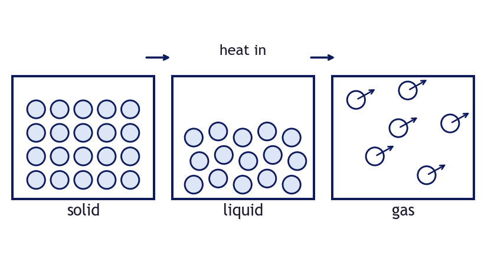
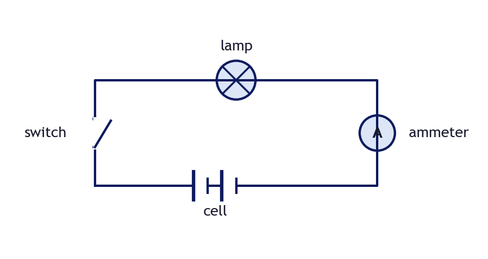
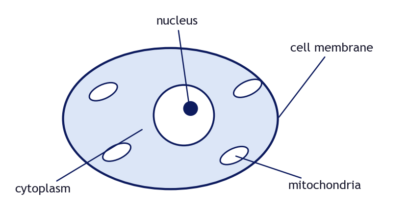
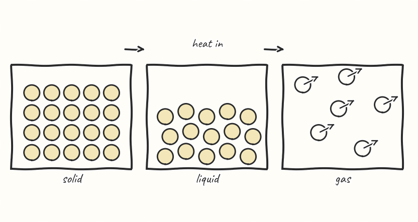
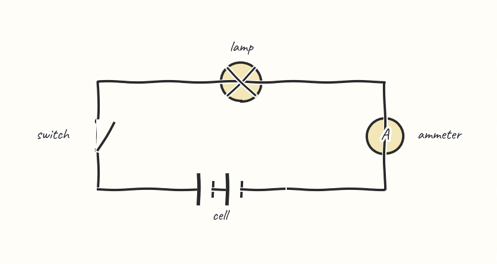
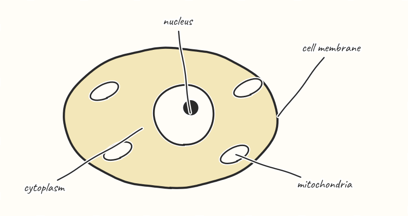
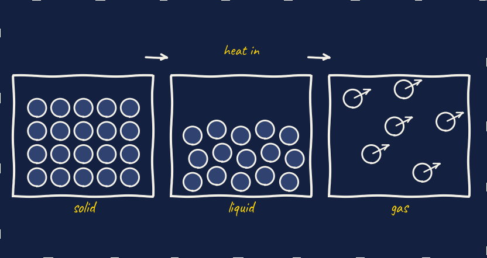
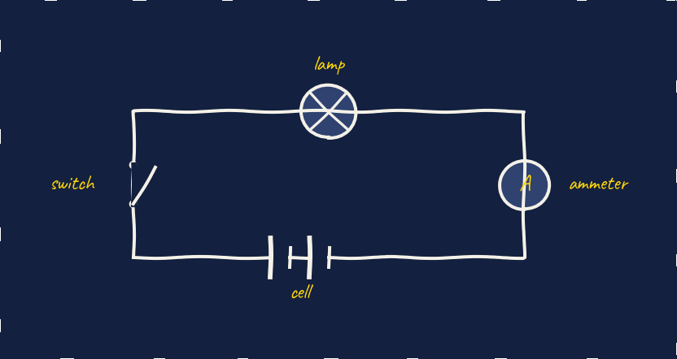
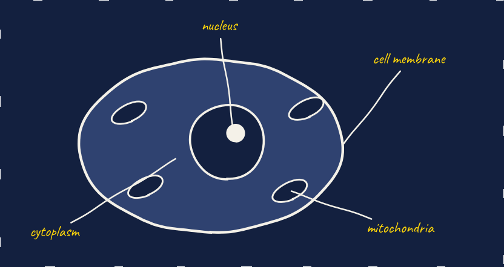

Your 19 Oct goal: diagrams in one consistent, hand-drawn-feeling style that is not AI-looking. The same three diagrams (particles, a series circuit, an animal cell) in three styles. All are drawn by code on this PC with what the lesson builder already has (no picture service, no cost), so whichever you pick can be built straight into Learn slides. Pick A, B or C, or say what to mix.



Navy lines, pale fill, the slide font. Crisp and consistent, looks like a good textbook. The least "drawn".



Wobbly ink lines, cream paper, the handwriting font the worksheets already use for model answers. Feels drawn by a person; pupils can copy it as it is. Labels are still typed, so they always read.



Chalk-white lines on the slide navy, labels in the answer yellow. Sits naturally on the navy answer boxes and the dark Learn panels. Harder to print.
How it would work in the builder: a Learn item names the diagram and its labels; the builder draws it with the chosen style and places it like any picture, with the labelled-picture build (one part per click) on top. Made by lanes/mockups/diagram-style/make.py.